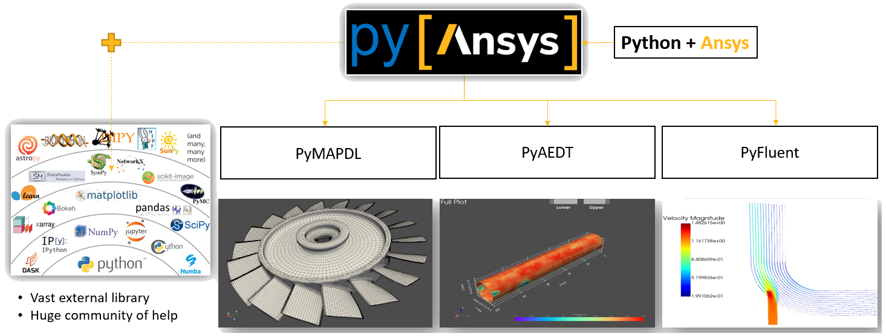
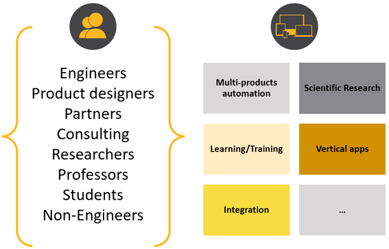

Frequently asked questions#
What is PyAnsys?#
PyAnsys is a set of open source technologies that allow you to interface Pythonically with Ansys Fluent, Mechanical APDL, AEDT, and other Ansys products. You can use PyAnsys libraries within a Python environment of your choice in conjunction with external Python libraries.
{kind=link}
What is PyFluent?#
PyFluent provides Pythonic access to Ansys Fluent. Its features enable the seamless use of Fluent within the Python ecosystem and broad access to native Fluent features for performing actions such as these:
Launch Fluent using a local Ansys installation.
Connect to a Fluent instance running on a remote machine.
Use Fluent’s TUI (text user interface) commands for both meshing and solver features.
Use Fluent’s built-in postprocessing capabilities.
PyFluent is bundled with the Fluent installation. You can also download and install PyFluent separately. For more information, see How do you install PyFluent?, which appears later on this page.
PyFluent has no GUI (graphical user interface). You interact with PyFluent through the Python environment of your choice.
How does PyFluent compare to Fluent user defined functions?#
PyFluent is conceptually aligned with Fluent TUI console commands and journaling rather than with user defined functions (UDFs). In other words, PyFluent is primarily used for automation rather than modifying the solver behavior.
UDFs continue to be written in C and remain important elements of Fluent simulations.
While you cannot write UDFs in Python, you can execute PyFluent commands to compile and load UDFs, similar to how you use TUI commands.
Who should use PyFluent?#
PyFluent users include engineers, product designers, consultants, and academia.
{kind=link}
Enhance productivity with customized scripts.
Automate multi-product workflows.
Extend CFD simulations to a wider audience by creating vertical apps.
Create comprehensive workflows inspired by Python’s increasingly broad offerings in these areas of scientific computing:
Computer vision
ML (machine learning)
AI (artificial intelligence)
Data processing and visualization
Optimization
Use widely accepted libraries and notations to compute multi-dimensional arrays in the Python environment.
{kind=link}
What can you do with PyFluent?#
You can use PyFluent to do tasks such as these:
Integrate Fluent as a solver seamlessly in your in-house design tools.
Customize postprocessing, perhaps by using Python’s vast external library to extend postprocessing capabilities or by automatically generating a PowerPoint presentation to show simulation results.
Use a web app to access jobs running on a cluster, monitor convergence, and generate graphs.
Leverage Python machine learning and artificial intelligence modules, especially for models that are solved quickly but can be improved as additional knowledge is acquired and applied.
Use Python to couple different Ansys products together.
How do you install PyFluent?#
While Installation provides basic information for quickly installing and
launching the ansys-fluent-core package, these steps explain how to install
all PyFluent packages in a Python virtual environment:
Install Python if it is not already installed.
For Python version information, see the answer to the next question.
Install Fluent 2022 R2 or later.
Set the environment variable for your installed release to point to the appropriate Ansys installation folder.
For example, for Ansys 2022 R2, you would likely set the
AWP_ROOT222environment variable to point toC:\Program Files\ANSYS Inc\v222.While you must explicitly set this environment variable on Linux, it should be automatically set on Windows.
In a command window, use this code to set up and activate a local Python virtual environment:
.. code:: bash
In the same command window, use
pip, the package installer for Python, to install the PyFluent packages:.. code:: bash
python -m pip install ansys-fluent-core # Use Fluent’s core capabilities (mesh, solve, postprocess) python -m pip install ansys-fluent-parametric # Use Fluent’s parametric capabilities (optional) python -m pip install ansys-fluent-visualization # Use Fluent’s postprocessing capabilities with pyvista and matplotlib (optional)
Which version of Python should you use?#
PyFluent supports Python 3.7 through Python 3.10 on Windows and Linux. Python
3.7 is shipped with Ansys 2022 R2 and later. For example, in a 2022 R2 Windows
installation, the executable file Python 3.7 is typically located at:
C:\Program Files\ANSYS Inc\v222\commonfiles\CPython\3_7\winx64\Release\python.exe.
Alternatively, you can download any compatible version of Python directly from the Downloads page of the Python web site.
In either case, run the Python executable file as an administrator, selecting the Add Python 3.9 to PATH checkbox on the first wizard page before proceeding with the installation. On the last wizard page, which indicates that Python is installed successfully, follow the instructions for disabling the path length limit if you have long file paths.
Where do you find source code and documentation?#
All PyAnsys public libraries are available from the PyAnsys GitHub account. The Repositories page displays the number of
repositories, which are searchable by name. For example, to find all PyFluent
libraries, type pyfluent in the search option.
The README.md file for the PyAnsys GitHub account lists the public PyAnsys
libraries. The links in this list are to the documentation for the respective
libraries. In addition to general usage information, the documentation for a
library includes many practical examples.
How do you launch Fluent using PyFluent?#
To launch Fluent with PyFluent commands, use this code:
import ansys.fluent.core as pyfluent
session=pyfluent.launch_fluent()
This example shows you how to launch a double precision Fluent session using two processors and activate the Fluent user interface:
session=pyfluent.launch_fluent(precision="double", processor_count=2, show_gui=True)
For additional launch examples, see Launch Fluent locally. For
descriptions of all parameters, see the launch_fluent() method.
How does PyFluent infer the location to launch Fluent?#
PyFluent infers the Fluent location based on the following information, in increasing order of precedence:
AWP_ROOT<ver>environment variable, which is configured on Windows system when Fluent is installed, where<ver>is the Fluent release number such as231for release 2023 R1. PyFluent automatically uses this environment variable to locate the latest Fluent installation. On Linux systems configureAWP_ROOT<ver>to point to the absolute path of an Ansys installation such as/apps/ansys_inc/v231.Value of
product_versionparameter passed tolaunch_fluent().PYFLUENT_FLUENT_ROOTenvironment variable, set this to<install location>/<ver>/fluentdirectory.
How do you learn how to use PyFluent?#
Depending on how you prefer to learn, you can use any or all of these methods to learn how to use PyFluent:
Review the examples in the documentation, working first through those provided in the :ref:_ref_example_gallery in this guide and then through those provided in the Examples sections in the PyFluent-Parametric and PyFluent-Visusalization guides.
Record a journal of your actions in Fluent and review the corresponding Python script.
Note
In Fluent 2022 R2, you can record a journal of your actions in Fluent meshing to produce a Scheme script. Within that script are embedded Python statements corresponding to each recorded meshing workflow action. When extracted from the Scheme script, those Python statements are valid in the PyFluent context.
Here is a Python command recorded in Fluent:
import :(%py-exec "workflow.TaskObject['Describe Geometry and Flow'].Arguments.setState({r'AddEnclosure': r'No',r'CloseCaps': r'Yes',r'FlowType': r'Internal flow through the object',})")
Here is the manually translated equivalent command in PyFluent syntax:
session.meshing.workflow.TaskObject['Describe Geometry and Flow'].Arguments.setState(({r'AddEnclosure': r'No',r'CloseCaps': r'Yes',r'FlowType': r'Internal flow through the object’,})
Write scripts, using capabilities such as these:
IntelliSense to show available options for any given command. For example, in JupyterLab, press the tab key.
Standard Python or PyAnsys tooling to print options related to a specified object. For example, use
dir (<object>)orhelp (<object>).
How do you get help for PyFluent?#
Because PyFluent libraries are open source, support for issues, bugs, and feature requests are available in their respective GitHub repositories.
To log an issue for PyFluent, use the PyFluent Issues page.
To start a discussion, use the PyFluent Discussions page.
For discussions about developer tools, engineering simulation, and physics for Ansys software, visit the Ansys Developer portal. The Ansys Discuss page is where users, partners, students, and Ansys subject matter experts connect, share ideas, discuss the latest technologies, and ask questions to quickly obtain help and guidance. On this page, you can filter discussions by category or apply the Fluent tag to view only Fluent-related discussions.